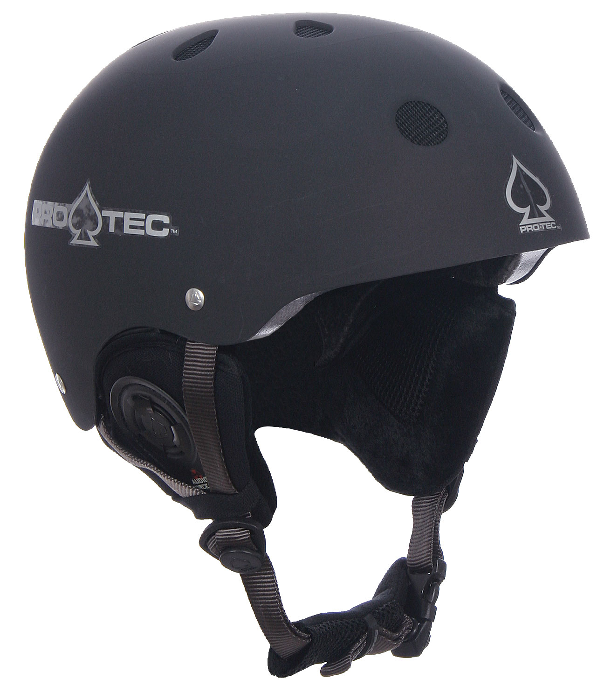
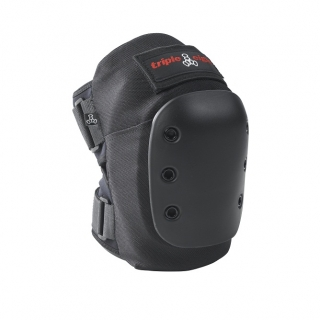
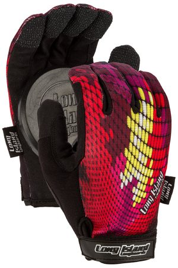
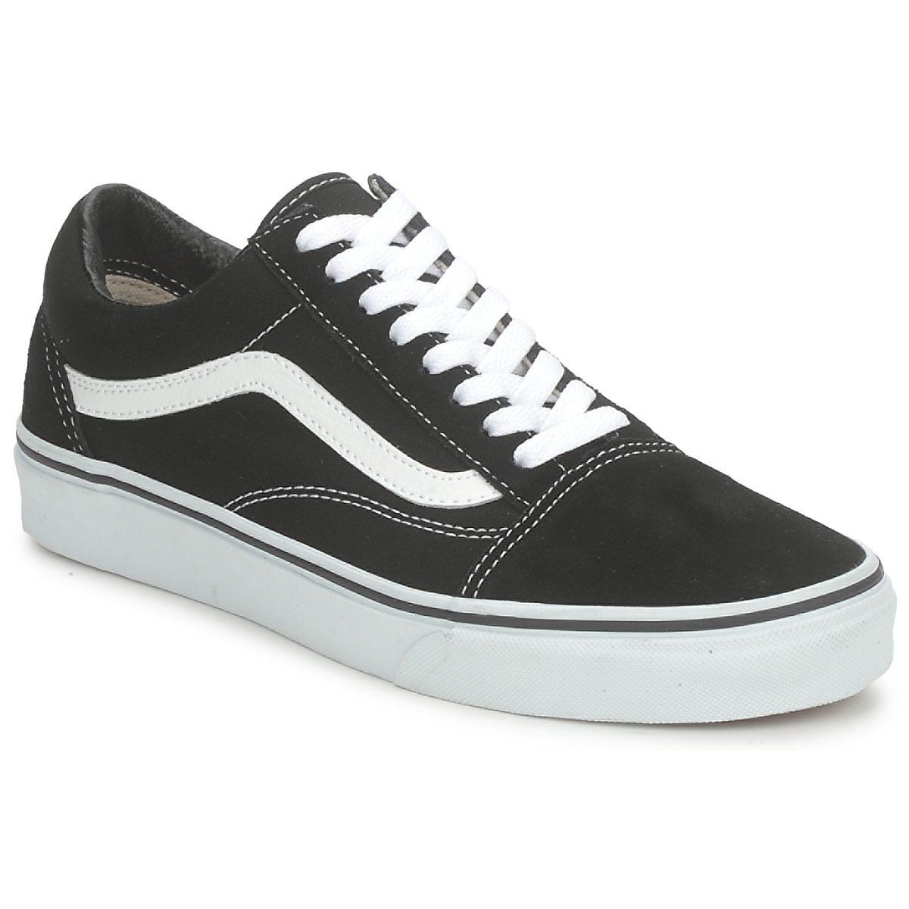

Acessori
-Negozi Online
GUIDA ALL'ACQUISTO
Caschetto

Caratteristiche Fondamentali:
Meccanismi estremi per sport estremi. Se si desidera skatare ad alti livelli, allora si deve prendere cura della propria salute.
Gli skate più all'avanguardia sono inutili se hai limitazioni fisiche. Soprattutto la testa ha bisogno di protezione. Questo è il motto
che si incarna in ogni prodotto di quest alinea, anche nei materiali del casco. Protezione prima! i caschetti da skater fanno punto di dettagli tecnici
e di un design lineare.
Caratteristiche:
- Peso: 300 g
- CPSC certificata
- 14 prese d'aria aerodinamiche
- Fit basso per una maggiore protezione
- pastiglie sostituibili e lavabili
- Guscio ad alta densità
- Schiuma EPS impatto leggero
dimensione:
- S / M: circonferenza della testa = 54 - 56 cm
- L / XL: circonferenza della testa = 57 - 59 cm
- XXL: circonferenza della testa = 59 - 60,5 cm
materiale:
- Shell:% di polietilene 100 (PE)
- Interno: 100% schiuma di polistirene espanso (EPS)
- Cinturino: poliestere, nylon
Ginocchiere

Caratteristiche Fondamentali:
Il paio di Ginocchiere professionali sono a forma di pastiglie di strada con ammortizzante in schiuma EVA e un tappo in PE,
protezione contro urti e abrasioni su un livello più basso. Il design elegante ed ergonomico pull-over supporta una grande
vestibilità e comfort per il pattinaggio negli skate park e per i principianti.
dimensioni:
S: 38 - 42 (circonferenza superiore), 30 - 35 (circonferenza inferiore)
M: 42 - 46 cm (circonferenza superiore), 35 - 40 cm (circonferenza inferiore)
L: 46 - 50 cm (circonferenza superiore), 40 - 45 cm (circonferenza inferiore)
Paramani

Caratteristiche Fondamentali:
guanti da Slide di Longboard e Skateboard. Strutturazione apposita per gli skater appassionati al genere Freeride, sono probabilmente
i guanti più popolari, da skate, al mondo. Prodotto eccellente dotato di una migliore imbottitura rispetto a un paio di guanti normali,
una migliore vestibilità e una imbottitura viscoelastico per le nocche. Accarezzare l'asfalto!
Caratteristiche:
- Polso schiuma visoelastic e la palma cuscino: Questa non è un salva-polso!
- Avvolgere al polso per ulteriore supporto
- Fodera riflettente
- Superiore mesh traspirante Coolmax ™
- durevole palme scamosciato sintetico
- Dita ergonomici forme per una migliore vestibilità
- Velcro palmo, pollice e le dita per il posizionamento puck ottimizzato
- Ultra High Peso Molecolare palma circolare e pollice pucks
- pucks dita ad alta densità
- nessun PVC
Consiglio: Assicurati di toccare appena la strada con i dischi di gomma di scorrimento e non con il guanto stesso.
Per inserire i dischi di gomma nella giusta posizione, si consiglia di indossare i guanti e facendo alcuni push-up per testare
il posizionamento delle ventose. Il più pressione dovrebbe essere messo sui dischi di gomma di palma.
Scarpe

Caratteristiche Fondamentali:
caratteristiche:
- tomaia: tela, pelle
- punta di scarpa allungata e d'un pezzo
- costruzione Pro Vulc con profilo waffle hexagon
- soletta modellata e rimuovibile Ultracush Lite
- asole lacci in metallo
- colletto e lingua leggermente imbottiti
- fodera in cotone
- buchi di ventilazione in metallo
- tacco rafforzato
- inserti tacco modellati
- due paia di lacci
Zaini

Caratteristiche Fondamentali:
L'enfasi degli zaini da skater offrono un design fresco e con un range molto più ampio di funzioni utili. Un grande scomparto principale con slot per computer portatile
imbottito offre abbastanza spazio di archiviazione per la vostra roba quotidiana.
Caratteristiche:
- Capacità: 35 litri
- Grande scomparto principale con slot per computer portatile e una piccola zip tasca micropile
- Due tasche laterali con chiusura a zip
- Collettore di bordo
- Schienale imbottito
- spallacci ergonomici, imbottiti e regolabili
- In altezza e larghezza fascia toracica regolabile
- Maniglia sulla parte superiore
- Tracolla
misure:
52 x 31 x 26 cm